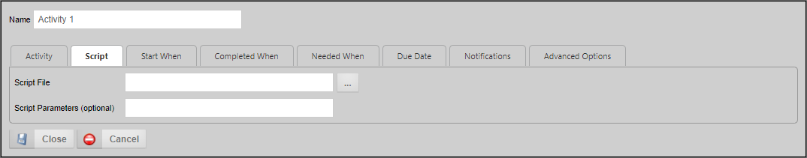
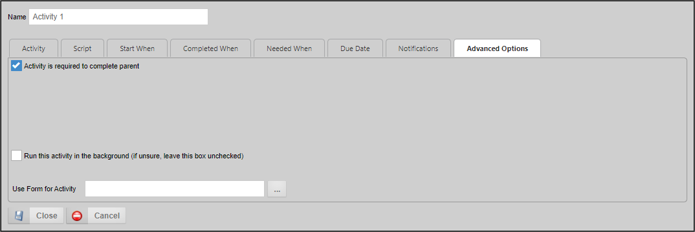

The Script task supports the ability to call custom script functions. This Activity Type is only available for installations that are licensed for the SDK component. In addition to the common properties tabs that appear for all Timeline activities, the configuration settings below are unique to this Activity Type.

The Script tab determines the script to be run. The script file is determined via contest list object picker. The script parameters are passed to the script as a string.
You may use the Object Picker to select a script that will automatically start when the Activity starts.
You may enter a parameter string to pass to the selected script.

The Advanced Options tab for this Activity Type has two unique properties.
For scripts that may take some time to process, you may wish to have the process run in the background. Please see the Background Operations section of the Process Timelines topic for more information about what this option entails.
In Timeline, if parent Activity has "Use Form for Activity" specified with particular form, then all child activities will default to the same form. This property enables a Script Activity in a Timeline to specify a different Form to use a current form for the Activity. If this property isn't configured, the Process Director will check the parent Timeline Activity for a configured Form and, if set, it will use that Form. Otherwise, Process Director will revert to passing the script to the current form instance that is associated with the running process.
To view the documentation for other Activity Types, you can navigate to them using the Table of Contents displayed in the upper right corner of the page, or by using one of the links below.
User: This Activity Type assigns a task to a user or users, which must be completed to end the task.
Notify: This Activity Type sends email notifications to users who aren't participants in the process.
Process: This Activity Type invokes a different process that will run as a separate, synchronous subprocess.
Custom Task: This Activity Type invokes a Custom Task to run when the Activity starts.
Form Actions: This Activity Type enables you to manipulate the Form used for the process.
Branch: This Activity Type enables you to change the operation of the Process Timeline to invoke a specified Activity.
Parent: This Activity Type serves as a container for other activities and to create a looping segment in a Process Timeline.
End Process: This Activity Type enables you to conditionally end a process.
Wait: This Activity Type enables you to pause a Process Timeline.
Case: This Activity Type enables you to manipulate the Case instance that is associated with the Process Timeline.